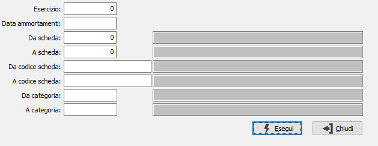

Annullamento generazione ammortamenti
Il programma provvede ad annullare i movimenti di ammortamento relativi ai cespiti validi ed a produrre contestualmente una stampa di controllo.

ESERCIZIO: campo numerico per indicare il numero dell’esercizio in cui sono stati generati gli ammortamenti che desideriamo annullare.
DATA GENERAZIONE AMMORTAMENTI: campo data che indica la data in cui sono stati generati gli ammortamenti da annullare riferiti all’esercizio indicato. Se presente, viene proposto in automatico e non è modificabile.
DA SCHEDA: indica il numero del cespite con cui iniziare la selezione. Sul campo sono attive le funzioni di ricerca (F9). L'utilizzo del numero cespite annulla quello del codice e viceversa.
A SCHEDA: indica il numero del cespite con cui terminare la selezione. Sul campo sono attive le funzioni di ricerca (F9). L'utilizzo del numero cespite annulla quello del codice e viceversa.
DA CODICE SCHEDA: indica il codice del cespite con cui iniziare la selezione. Sul campo sono attive le funzioni di ricerca (F9). L'utilizzo del numero cespite annulla quello del codice e viceversa.
A CODICE SCHEDA: indica il codice del cespite con cui terminare la selezione. Sul campo sono attive le funzioni di ricerca (F9). L'utilizzo del numero cespite annulla quello del codice e viceversa.
DA CATEGORIA: inserire la categoria fiscale da cui si desidera iniziare la selezione. Sul campo sono attive le funzioni di ricerca (F9).
A CATEGORIA: inserire la categoria fiscale con cui si desidera terminare la selezione. Sul campo sono attive le funzioni di ricerca (F9).